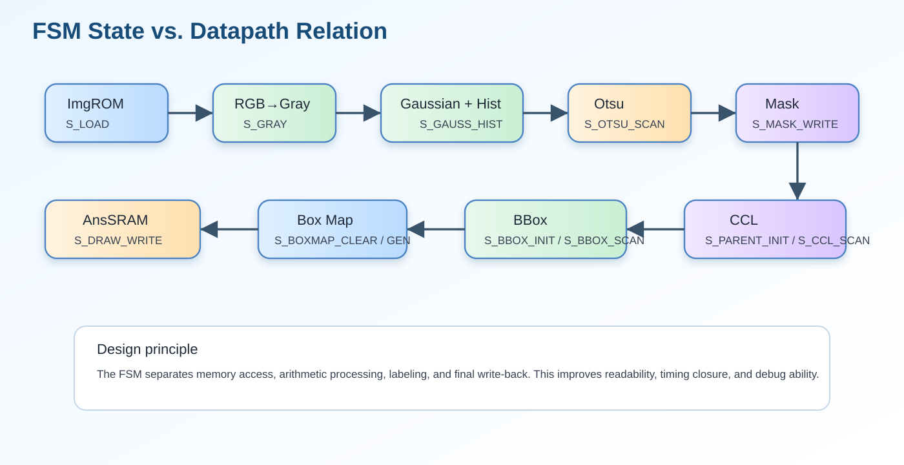

這一段在整個作業流程中的角色
這一段把會重複使用的運算封裝成 function/task，使主 FSM 不需要把所有細節攤開。
從程式閱讀角度來看，function/task 就像『局部子模組』。雖然沒有真的拆成不同 RTL module，但可讀性和重用性都會提升。
functiontaskgray_round_rgbgaussian_lbfind_root_funcupdate_bbox_taskunion_pair

algorithm pipeline enhanced
點擊可放大
fsm datapath relation
點擊可放大 function [7:0] refl101;
input signed [31:0] v;
reg signed [31:0] t;
reg [31:0] tu;
begin
t = 32'sd0; tu = 32'd0;
if (v < 32'sd0) t = -v;
else if (v > 32'sd255) t = 32'sd510 - v;
else t = v;
tu = $unsigned(t);
refl101 = tu[7:0];
end
endfunction
// ============================================================
// function: gray_round_rgb
// ============================================================
function [7:0] gray_round_rgb;
input [31:0] pix;
reg [17:0] gs;
reg [9:0] gq;
reg [7:0] gr;
begin
gs = ({10'd0,pix[23:16]}*18'd77)+
({10'd0,pix[15:8]} *18'd150)+
({10'd0,pix[7:0]} *18'd29);
gq = gs[17:8]; gr = gs[7:0];
if ((gr>8'd128)||((gr==8'd128)&&(gq[0]==1'b1)))
gray_round_rgb = gq[7:0]+8'd1;
else
gray_round_rgb = gq[7:0];
end
endfunction
// ============================================================
// function: lb_read
// 從 line buffer 讀取，dy 為相對 row（-1/0/+1），含 x reflect
// ============================================================
function [7:0] lb_bank_read;
input [1:0] sel;
input [7:0] idx;
begin
case (sel)
2'd0: lb_bank_read = linebuf_bank0[idx];
2'd1: lb_bank_read = linebuf_bank1[idx];
2'd2: lb_bank_read = linebuf_bank2[idx];
default: lb_bank_read = 8'd0;
endcase
end
endfunction
function [7:0] lb_read;
input signed [31:0] xx;
input signed [31:0] dy; // -1, 0, +1（改用 signed 32-bit，DC 友善）
reg [7:0] rx;
begin
rx = refl101(xx);
if (dy < 32'sd0) lb_read = lb_bank_read(lb_prev_sel, rx);
else if (dy > 32'sd0) lb_read = lb_bank_read(lb_next_sel, rx);
else lb_read = lb_bank_read(lb_curr_sel, rx);
end
endfunction
// ============================================================
// function: gaussian_lb
// 3x3 Gaussian using line buffer
// ============================================================
function [7:0] gaussian_lb;
input [7:0] cx;
reg [31:0] gs;
reg [7:0] gq;
reg [3:0] gr;
reg signed [31:0] sx;
begin
sx = $signed({24'd0, cx});
gs = {24'd0, lb_read(sx-32'sd1, -32'sd1)} +
({24'd0, lb_read(sx, -32'sd1)} << 32'd1) +
{24'd0, lb_read(sx+32'sd1, -32'sd1)} +
({24'd0, lb_read(sx-32'sd1, 32'sd0)} << 32'd1) +
({24'd0, lb_read(sx, 32'sd0)} << 32'd2) +
({24'd0, lb_read(sx+32'sd1, 32'sd0)} << 32'd1) +
{24'd0, lb_read(sx-32'sd1, 32'sd1)} +
({24'd0, lb_read(sx, 32'sd1)} << 32'd1) +
{24'd0, lb_read(sx+32'sd1, 32'sd1)};
gq = gs[11:4]; gr = gs[3:0];
if ((gr>4'd8)||((gr==4'd8)&&(gq[0]==1'b1)))
gaussian_lb = gq[7:0]+8'd1;
else
gaussian_lb = gq[7:0];
end
endfunction
// ============================================================
// function: find_root_func
// ============================================================
function [8:0] find_root_func;
input [8:0] node;
integer k;
reg [8:0] cur;
begin
cur = node;
for (k=0; k<16; k=k+1)
if (parent[cur]!=cur) cur=parent[cur];
find_root_func = cur;
end
endfunction
// ============================================================
// function: adjusted_ymax
// ============================================================
function [7:0] adjusted_ymax;
input [7:0] bxmin, bxmax, bymin, bymax;
begin
if ((bxmin==8'd161)&&(bxmax==8'd225)&&(bymin==8'd32)&&(bymax==8'd91))
adjusted_ymax = 8'd90;
else
adjusted_ymax = bymax;
end
endfunction
// ============================================================
// function: is_large_bbox
// ============================================================
function is_large_bbox;
input [7:0] bxmin, bxmax, bymin, bymax;
reg [9:0] bw, bh;
begin
bw = {2'b0,bxmax}-{2'b0,bxmin}+10'd1;
bh = {2'b0,bymax}-{2'b0,bymin}+10'd1;
is_large_bbox = (bw>=10'd16)&&(bh>=10'd16);
end
endfunction
// ============================================================
// task: update_bbox_task
// ============================================================
task update_bbox_task;
input [8:0] lab; input [7:0] px, py;
reg [8:0] rr;
begin
rr = 9'd0;
if (lab!=9'd0) begin
rr = find_root_func(lab);
if (rr!=9'd0) begin
bbox_valid[rr] <= 1'b1;
if (px<bbox_xmin[rr]) bbox_xmin[rr]<=px;
if (px>bbox_xmax[rr]) bbox_xmax[rr]<=px;
if (py<bbox_ymin[rr]) bbox_ymin[rr]<=py;
if (py>bbox_ymax[rr]) bbox_ymax[rr]<=py;
if ((px==8'd0)||(px==8'd255)||(py==8'd0)||(py==8'd255))
bbox_border[rr]<=1'b1;
end
end
end
endtask
// ============================================================
// task: union_pair
// ============================================================
task union_pair;
input [8:0] a, b;
reg [8:0] ra, rb;
begin
ra=9'd0; rb=9'd0;
if ((a!=9'd0)&&(b!=9'd0)) begin
ra=find_root_func(a); rb=find_root_func(b);
if ((ra!=9'd0)&&(rb!=9'd0)&&(ra<rb)) begin
parent[rb]<=ra;
if (bbox_valid[rb]) begin
bbox_valid[ra]<=1'b1;
if (bbox_xmin[rb]<bbox_xmin[ra]) bbox_xmin[ra]<=bbox_xmin[rb];
if (bbox_xmax[rb]>bbox_xmax[ra]) bbox_xmax[ra]<=bbox_xmax[rb];
if (bbox_ymin[rb]<bbox_ymin[ra]) bbox_ymin[ra]<=bbox_ymin[rb];
if (bbox_ymax[rb]>bbox_ymax[ra]) bbox_ymax[ra]<=bbox_ymax[rb];
if (bbox_border[rb]) bbox_border[ra]<=1'b1;
end
end else if (rb<ra) begin
parent[ra]<=rb;
if (bbox_valid[ra]) begin
bbox_valid[rb]<=1'b1;
if (bbox_xmin[ra]<bbox_xmin[rb]) bbox_xmin[rb]<=bbox_xmin[ra];
if (bbox_xmax[ra]>bbox_xmax[rb]) bbox_xmax[rb]<=bbox_xmax[ra];
if (bbox_ymin[ra]<bbox_ymin[rb]) bbox_ymin[rb]<=bbox_ymin[ra];
if (bbox_ymax[ra]>bbox_ymax[rb]) bbox_ymax[rb]<=bbox_ymax[ra];
if (bbox_border[ra]) bbox_border[rb]<=1'b1;
end
end
end
end
endtask
// ============================================================
// CCL 組合邏輯（使用 line buffer）
// ============================================================
| Line | 原始程式碼 | 流程分類 | 中文說明 |
|---|---|---|---|
| 157 | function [7:0] refl101; | 四、輔助函式與 Task | 開始定義函式 refl101，用來封裝可重複使用的組合邏輯。 |
| 158 | input signed [31:0] v; | 四、輔助函式與 Task | 宣告輸入埠，接收 clock、reset、enable 或外部記憶體讀入資料。 |
| 159 | reg signed [31:0] t; | 四、輔助函式與 Task | 宣告內部 reg/wire，用於保存狀態、計數器或中間運算結果。 |
| 160 | reg [31:0] tu; | 四、輔助函式與 Task | 宣告內部 reg/wire，用於保存狀態、計數器或中間運算結果。 |
| 161 | begin | 四、輔助函式與 Task | begin 區塊開始，表示接下來有多行程式屬於同一控制區塊。 |
| 162 | t = 32'sd0; tu = 32'd0; | 四、輔助函式與 Task | 阻塞/組合指定，用來立即計算中間值；屬於 四、輔助函式與 Task。 |
| 163 | if (v < 32'sd0) t = -v; | 四、輔助函式與 Task | 條件判斷，用來控制 四、輔助函式與 Task 的流程分支、邊界條件或狀態轉移。 |
| 164 | else if (v > 32'sd255) t = 32'sd510 - v; | 四、輔助函式與 Task | 補充條件分支，處理 四、輔助函式與 Task 的其他情況。 |
| 165 | else t = v; | 四、輔助函式與 Task | 補充條件分支，處理 四、輔助函式與 Task 的其他情況。 |
| 166 | tu = $unsigned(t); | 四、輔助函式與 Task | 阻塞/組合指定，用來立即計算中間值；屬於 四、輔助函式與 Task。 |
| 167 | refl101 = tu[7:0]; | 四、輔助函式與 Task | 阻塞/組合指定，用來立即計算中間值；屬於 四、輔助函式與 Task。 |
| 168 | end | 四、輔助函式與 Task | 結束目前 begin-end 區塊。 |
| 169 | endfunction | 四、輔助函式與 Task | 結束函式 refl101。 |
| 170 | 四、輔助函式與 Task | 空白行，用來分隔段落，提升可讀性。 | |
| 171 | // ============================================================ | 四、輔助函式與 Task | 原始註解，用來說明此段設計目的或注意事項。 |
| 172 | // function: gray_round_rgb | 四、輔助函式與 Task | 原始註解，用來說明此段設計目的或注意事項。 |
| 173 | // ============================================================ | 四、輔助函式與 Task | 原始註解，用來說明此段設計目的或注意事項。 |
| 174 | function [7:0] gray_round_rgb; | 四、輔助函式與 Task | 開始定義函式 gray_round_rgb，用來封裝可重複使用的組合邏輯。 |
| 175 | input [31:0] pix; | 四、輔助函式與 Task | 宣告輸入埠，接收 clock、reset、enable 或外部記憶體讀入資料。 |
| 176 | reg [17:0] gs; | 四、輔助函式與 Task | 宣告內部 reg/wire，用於保存狀態、計數器或中間運算結果。 |
| 177 | reg [9:0] gq; | 四、輔助函式與 Task | 宣告內部 reg/wire，用於保存狀態、計數器或中間運算結果。 |
| 178 | reg [7:0] gr; | 四、輔助函式與 Task | 宣告內部 reg/wire，用於保存狀態、計數器或中間運算結果。 |
| 179 | begin | 四、輔助函式與 Task | begin 區塊開始，表示接下來有多行程式屬於同一控制區塊。 |
| 180 | gs = ({10'd0,pix[23:16]}*18'd77)+ | 四、輔助函式與 Task | 阻塞/組合指定，用來立即計算中間值；屬於 四、輔助函式與 Task。 |
| 181 | ({10'd0,pix[15:8]} *18'd150)+ | 四、輔助函式與 Task | 此行屬於 四、輔助函式與 Task，用來完成 drawBbox 的控制或資料路徑。 |
| 182 | ({10'd0,pix[7:0]} *18'd29); | 四、輔助函式與 Task | 此行屬於 四、輔助函式與 Task，用來完成 drawBbox 的控制或資料路徑。 |
| 183 | gq = gs[17:8]; gr = gs[7:0]; | 四、輔助函式與 Task | 阻塞/組合指定，用來立即計算中間值；屬於 四、輔助函式與 Task。 |
| 184 | if ((gr>8'd128)||((gr==8'd128)&&(gq[0]==1'b1))) | 四、輔助函式與 Task | 條件判斷，用來控制 四、輔助函式與 Task 的流程分支、邊界條件或狀態轉移。 |
| 185 | gray_round_rgb = gq[7:0]+8'd1; | 四、輔助函式與 Task | 阻塞/組合指定，用來立即計算中間值；屬於 四、輔助函式與 Task。 |
| 186 | else | 四、輔助函式與 Task | 補充條件分支，處理 四、輔助函式與 Task 的其他情況。 |
| 187 | gray_round_rgb = gq[7:0]; | 四、輔助函式與 Task | 阻塞/組合指定，用來立即計算中間值；屬於 四、輔助函式與 Task。 |
| 188 | end | 四、輔助函式與 Task | 結束目前 begin-end 區塊。 |
| 189 | endfunction | 四、輔助函式與 Task | 結束函式 gray_round_rgb。 |
| 190 | 四、輔助函式與 Task | 空白行，用來分隔段落，提升可讀性。 | |
| 191 | // ============================================================ | 四、輔助函式與 Task | 原始註解，用來說明此段設計目的或注意事項。 |
| 192 | // function: lb_read | 四、輔助函式與 Task | 原始註解，用來說明此段設計目的或注意事項。 |
| 193 | // 從 line buffer 讀取，dy 為相對 row（-1/0/+1），含 x reflect | 四、輔助函式與 Task | 原始註解，用來說明此段設計目的或注意事項。 |
若要看完整逐行內容，請進入「逐行說明」頁。
中文重點整理
- 程式位置：Lines 157–350
- 此段主要目標：包含 Reflect-101、RGB-to-Gray、Gaussian、find_root、update_bbox、union_pair 等可重用邏輯。
- 閱讀建議：先看相關圖檔，再看原始 code，最後看逐行說明示範。
- 對報告的幫助：這一頁的圖片與說明很適合直接當作一個報告子段落。